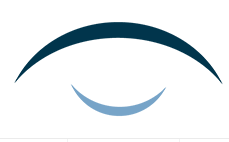

Clinica Oftalmologica del Perú
A su servicio desde XXXX

Somos Los Pioneros en la Macro Región Norte del País
Calidad
Calidad de servicio al cliente
Garantía
Cumplimos con todos estándares
Innovación
Siempre buscando el cambio y mejoria
Tecnología
Constante actualización a nivel de equipos y personal